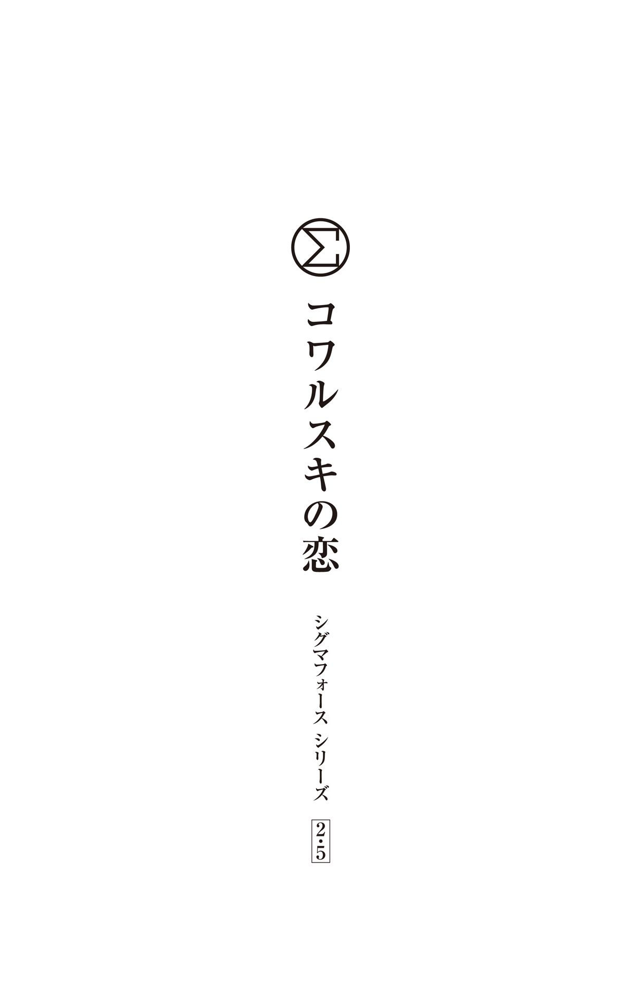

| 〈シグマフォース・シリーズ2.5〉コワルスキの恋 シグマフォースシリーズ | |
| ジェームズ・ロリンズ | |
| (2016) | |
この作品は縦書きでレイアウトされています。
また、ご覧になる機種により、表示の差異が認められることがあります。
一部の漢字が簡略字で表示されていることがあります。

シグマフォース・シリーズ③『ユダの覚醒』で初めて登場したジョー・コワルスキは、体が大きく、頑丈さだけが取り柄のような男だ。どちらかというと頭の回転の鈍い彼は、高いＩＱを持つ兵士で構成されるシグマフォースの隊員の中では異質な存在と言える。それ以外にも、コワルスキには謎が多い。なぜ病的なまでに「サル」を怖がるのか？ シリーズ④の『ロマの血脈』では、シャイ・ロサウロと顔見知りであることが描かれているが、二人の間には過去にどんな接点があったのか？
その謎を探ると、『ユダの覚醒』の前に起きた、ブラジルでのある事件にたどり着く。
主な登場人物
ジョー・コワルスキ .........米国海軍の上等水兵
シャイ・ロサウロ .........米国国防総省の秘密特殊部隊シグマの隊員
その男の顔は見られたものではなかった......イノシシ用の罠 にはまって逆さに吊り下げられていることを割り引いてもだ。しし鼻で、短く刈り込んだ髪は黒。身長二メートル近くある肉の塊が、濡れたグレーのボクサーパンツだけを身に着けた姿で木の枝からぶら下がっている。胸にはいくつもの古い傷跡が刻まれているが、鎖骨から下腹部にかけての血がにじんだ傷は、真新しいもののようだ。大きく見開いた目の奥の瞳は、恐怖で怯 えている。
無理もない。
二分前、近くの海岸にパラグライダーで着地したドクター・シャイ・ロサウロは、ジャングルの中から響く男の悲鳴を耳にした。装備を外してから音を立てずに忍び寄り、少し距離を置いた木陰に隠れて様子をうかがっているところだ。
「あっちへ行けよ、この毛むくじゃら野郎め......！」
男の悪態は止まらない。とめどなく流れる言葉にはブロンクス訛 りがある。おそらくアメリカ人だろう。自分と同じだ。
ロサウロは腕時計を確認した。
午前八時三十三分。
島は二十七分後に爆撃される。
だが、この男の命はそれまで持ちそうもない。
叫び声を聞いて集まってきた島の生物が、この男にとってはより差し迫った脅威だ。大人のマンドリルの平均体重は四十キロ以上で、その大部分を筋肉と歯が占めている。主な生息地はアフリカで、ブラジル沿岸のジャングルに覆われた島にはいないはずだ。発信機付きの黄色い首輪をはめていることから推測するに、このマンドリルの群れはサラザール教授の研究材料で、この辺 鄙 な孤島に実験用の動物として運ばれてきたに違いない。マンドリルは果食性と考えられており、果物や木の実を好んで食する。
ただし、必ずしもそれだけとは限らない。
時には肉を食べることも知られている。
一匹のマンドリルが、罠にはまった男の周囲を悠然と歩いていた。チャコールグレーの毛を持つオスで、真っ赤な鼻の両側が青く筋状に盛り上がっている。このような配色を持つのは群れの中のボスのオスだけだ。冴えない茶色の顔をしたメスやほかのオスたちは、地面に尻をついて座ったり、近くの木の枝からぶら下がったりしている。そのうちの一匹があくびをした。長さ七、八センチはあろうかという犬歯と、鋭い門歯の列があらわになる。
ボスは囚われの身の男のにおいを嗅いだ。男は近づいたマンドリルにパンチを食らわそうとしたが、大きな拳は虚 しく空を切った。
マンドリルのボスは後足で立ち上がり、激しく吠えた。口を大きく開くと、黄色の長い牙がむき出しになる。敵を威 嚇 する仕草だ。ほかのマンドリルたちも獲物へと近づき始めた。
シャイも木陰を離れて群れに近づいた。全員の視線が集まる。シャイは手を高く掲げ、「シュリーカー」と呼ばれる音響装置のボタンを押した。装置が発するサイレンの音は、狙い通りの効果をもたらした。
マンドリルの群れが森の奥へと逃げていく。ボスは大きくジャンプし、低い木の枝をつかむと、枝を伝いながらジャングルの暗がりへと姿を消した。
ロープに吊るされたままの男もシャイに気づいた。「なあ......頼むからさ......」
シャイはすでに鉈 を手にしていた。岩の上に飛び移り、鉈を一振りして麻のロープを切断する。
男は勢いよく落下し、やわらかな地面に体を打ちつけ、脇腹を下にして横になった。豊富な悪態の語 彙 を駆使しながら、足首のロープをほどこうと苦労している。男はようやく絡まったロープから解放された。
「サルめ、覚えてろ！」
「マンドリル」シャイは指摘した。
「何だって？」
「今のはマンドリルよ。短いしっぽがあったでしょ」
「そうだったかな。俺にはでっかい歯しか見えなかったぜ」
男が立ち上がって膝を払った時、シャイは男の右の上腕部に米国海軍の錨 の刺青 が彫られていることに気づいた。退役軍人だろうか？ もしかしたら役に立つかもしれない。シャイは腕時計を確認した。
午前八時三十五分。
「ここで何をしているの？」シャイは訊ねた。
「ボートが壊れたんだ」男はシャイの細身の体をなめまわすように眺めている。
シャイが人間のオスからそのような視線を浴びるのは珍しいことではない......緑色の迷彩服に頑丈なブーツという、決してお洒落とは言えない今のような身なりであっても。肩まで届く黒髪は、耳の後ろでまとめて黒のバンダナで結んである。熱帯の暑さの中で、汗のにじんだ肌は濃いコーヒー色に輝いている。
じろじろ見ていることに気づかれたと悟り、男はあわてて海岸の方に目線を移した。「ボートが沈んだ後で、ここまで泳いできたんだ」
「ボートが沈んだの？」
「正確には、爆発したんだ」
シャイは無言で見つめたまま、詳しい説明を求めた。
「ガソリンが漏れていたんだ。そこに葉巻を落としたもんだから──」
シャイは鉈を握ったままの手を振って、それ以上の説明を遮った。三十分もしないうちに、島の北端の岬に迎えが来る予定になっている。それまでの間に、施設に侵入し、金庫を開け、抗体の入った容器を確保しなければならない。シャイはジャングルの奥に向かって歩き始めた。後ろに気配を感じる。男がぴったりと後についてくる。
「なあ......どこに向かっているんだ？」
シャイはバックパックの中から折りたたんだレインポンチョを取り出し、男に手渡した。
男はレインポンチョに体を無理やり押し込みながら、シャイの後を追う。「俺の名前はコワルスキだ」ポンチョを後ろ前に着てしまい、直そうともがいている。「ボートを持っているのかい？ それとも、ほかにこの島からの脱出手段があるとか？」
細かいことを説明している余裕はない。「二十三分後、ブラジル海軍が焼 夷 弾でこの島を焼き払う予定」
「何だって？」男は手首を見た。腕時計なんてはめていないのに。
シャイは続けた。「午前八時五十五分、この島の北端の岬に脱出のための迎えが来る。それまでに、この島であるものを回収しないといけない」
「ちょっと待ってくれ。その前の話だけど、誰がこのくそみたいな島を焼き払うって？」
「ブラジル海軍。二十三分後」
「何てこった」男は首を横に振った。「このあたりにはほかにも島があるのに、よりによって爆撃予定の島にたどり着くとは」
シャイは男の愚痴を無視した。少なくとも、この男は立ち止まらずについてくる。それだけでも大したものだ。勇気があるのか、何も理解していないか、どちらかだろう。
「おい、見ろよ......マンゴーだ」男が黄色い実に手を伸ばした。
「触ってはだめ」
「何でだよ？ もう腹ペコで──」
「この島のあらゆる植物には、遺伝子の変異したラブドウイルスが空中散布されている」
男は手を引っ込めた。
「体内に摂取されると、ウイルスは脳の感覚中枢を刺激して、感染者の感覚が研ぎ澄まされる。視覚、聴覚、嗅 覚 、味覚、触覚のすべて」
「それのどこがいけないんだ？」
「その過程で大脳皮質の神経回路網が破壊され、狂暴化するのよ」
背後のジャングルから獣の咆 哮 が聞こえてくる。それに呼応して、左右から短いうなり声や遠吠えが響く。
「さっきのサル......？」
「マンドリル。ええ、感染しているわ。動物実験が行なわれていたのよ」
「すげえな。『猿の惑星』のロケ地にしたらいいのに」
シャイは男を無視して前方を指差した。木々の間から見える小高い丘の上に、漆 喰 塗りの建物がある。「あそこまでたどり着かないといけない」
テラコッタのタイルが貼られた建物は、サラザール教授が研究用に借りていたものだ。世界各地で暗躍する謎のテロ組織が、そのための資金を援助していた。この人目につかない孤島で教授が行なっていた生物兵器の開発は、研究の最終段階にあったのだ。ところが二日前、世界規模の脅威と戦うアメリカの秘密特殊部隊シグマフォースが、ブラジルの熱帯雨林の奥地で教授の身柄を確保した。しかし、マナウス郊外にある先住民の村落がすでに教授の手でウイルスに感染させられており、その中には国際機関の運営する小児救援病院も含まれていた。
すでに発症している患者もいたため、村はすぐさまブラジル軍によって隔離された。治療のための唯一の希望は、サラザール教授の金庫の中にある抗体だ。
金庫の中にあった 抗体、と言うべきかもしれない。
サラザール教授は、抗体をすべて破壊したと主張している。
この証言を得たブラジル政府は、一切の危険を排除するという決断を下した。今日の夕方、ハリケーン級の風を伴った嵐がこの付近を直撃するとの予報が出ている。高波によってウイルスがこの島から流されて本土沿岸の熱帯雨林へと漂着することを、ブラジル政府は危惧しているのだ。ウイルスの付着した葉がたった一枚流れ着いただけで、赤道直下の熱帯雨林全域が感染してしまう危険もある。そのため、この小さな島に焼夷弾を投下し、あらゆる植物を焼き尽くす計画になっている。攻撃予定時刻は午前九時ちょうど。抗体が存在するかもしれないわずかな可能性に賭けて攻撃を遅らせるように説得したものの、ブラジル政府は首を縦に振らなかった。すべてを抹消する、それが彼らの決定だった。その対象には先住民の村落も含まれる。「許容範囲内の損失」ということらしい。
シャイの心の中に怒りが湧き上がった。パートナーのマヌエル・ギャリソンの顔が浮かぶ。彼は小児病院から子供たちを避難させようとしたが、間に合わず、隔離され、自らも感染してしまった。病院内のすべての子供たちとともに。
「許容範囲内の損失」などという言葉は彼女の中に存在しない。
少なくとも今日は。
そのため、シャイは単独で任務を遂行することにした。高高度からパラグライダーで降下しながら、無線で計画を伝えたのだ。シグマの司令部は島の北端に脱出用のヘリコプターを派遣することに同意した。ただし、着地している時間は一分間だけ。それまでにヘリコプターに乗ることができなければ、この島で焼き殺されることになる。
自分にはその覚悟ができている。
しかし、もう一人はどうなのだろうか？
肉の塊のような男は、大きな足音を立てながら後ろをついてくる。口笛の音が聞こえる。この男は口笛を吹いている。シャイは男の方を振り返った。「コワルスキさんとやら、さっきの話を忘れたの？ ウイルスに感染すると聴覚が敏感になると説明したはずよね」いらだちをあらわにしながら小声で言い聞かせる。
「ごめん」男は後ろを振り返った。
「あと、そこの罠にも気をつけて」そう注意しながら、シャイは雑にカムフラージュされた穴を迂 回 した。
「何だって──？」男の左足がアシの葉を編んで作った落とし戸の真ん中へと向かい、踏み抜いた。
シャイは肩で体当たりしてコワルスキを突き飛ばした。折り重なるように地面に倒れる。まるで煉 瓦 の山の上に倒れたかのような感覚だ。いや、そんな比較は煉瓦に失礼だろう。
シャイは体を起こした。「罠にかかったばかりなら、足もとにもっと注意しなさいよ！ この一帯にはたくさんの罠が張り巡らされているんだから」
シャイは立ち上がり、バックパックの位置を直し、とがった槍 が埋め込まれた穴の周囲に沿って歩いた。「私から離れないこと。私が歩いたところに足を置くように」
怒りで注意が散漫になっていたため、シャイは足もとに張られたコードに気づかなかった。
唯一の警告は小さな「ビーン」という音。
シャイは脇に飛びのいたが、手遅れだった。森の中からロープにつながれた丸太が飛び出し、シャイの膝を直撃した。脛 骨 の折れる音がはっきり聞こえると同時に、体が宙を舞う──落下地点には罠の穴が大きな口を開けている。
シャイはとがった槍の先端をかわそうと体をひねった。だが、避けられるはずがない。
次の瞬間、シャイの体は再び煉瓦にぶつかった。
コワルスキが飛び出し、身を挺 してシャイを罠から守ったのだ。跳ね返ったシャイの体が地面を転がる。脚から腰へ、さらに背骨へと、激しい痛みが走る。視界がかすんでいくが、不自然にねじれた膝から下は確認できる。
コワルスキが隣にやってきた。「うわあ、ひどいな......うわあ、ひどいな......」
「脚の骨が折れたわ」シャイは痛みをこらえながら伝えた。
「添え木を当てた方がいい」
シャイは腕時計を確認した。
午前八時三十九分。
残り時間は二十一分。
コワルスキもシャイが何を気にしているのか気づいたようだ。「俺が抱えてやるよ。そうすれば間に合うように脱出地点に着けるさ」
シャイは頭の中でもう一度計算した。照れくさそうに笑うマヌエルの顔が脳裏に浮かぶ──大勢の子供たちの顔も。折れた骨の痛みすらをも上回る苦痛が、シャイの全身を貫く。自分に失敗は許されない。
コワルスキはシャイの表情から決意を読み取ったようだ。「その怪我じゃ、あの家まで行けるはずがない」
「ほかに選択肢はないのよ」
「それなら、俺が代わりに行く」そのコワルスキの言葉に、シャイは驚いたが、それ以上に本人が驚いている様子だ。けれども、コワルスキは宣言を取り消さなかった。「あんたは海岸まで直接向かうといい。俺はあの建物からあんたが希望するものを取ってきてやる」
シャイは顔を上げ、さっき出会ったばかりの男の顔をまじまじと見つめた。希望の光を探す。内に秘めた強さや、見た目からはわからない不屈の精神力が、この男にはあるのではないだろうか？ シャイの期待は裏切られた。けれども、やはりほかに選択肢はない。
「ほかにも罠があるかもしれない」
「これからは目を皿のように見開いて歩くさ」
「あの建物の金庫も......こじ開ける方法をここで教えていたら時間がなくなるわ」
「予備の無線はあるか？」
シャイはうなずいた。
「それなら、俺が向こうに着いたら無線で開け方を教えてくれ」
シャイは躊 躇 した──だが、その時間さえも惜しい。バックパックを下ろす。「前かがみになって」
シャイはバックパックのサイドポケットに手を入れ、二枚の粘着式パッチを取り出した。一枚を男の耳の後ろに、もう一枚を喉仏の上に貼り付ける。「マイクロレシーバーとサブヴォーカライジング用のトランスミッターよ」
シャイはてきぱきと無線のテストをしながら、自分たちが直面している状況を説明した。
「太陽の光を浴びながらののんびりとした休暇はお預けということか」コワルスキがつぶやいた。
「ナイフも渡しておくわね。あと、もう一つ」シャイは付け加えた。バックパックの中から三つに分解された武器を取り出す。「ＶＫライフルよ」シャイは手際よくライフルを組み立て、太い円筒形のカートリッジをライフルの下部に装着した。ずんぐりとしたアサルトライフルのようだが、銃身は横幅があり、水平につぶれた形状をしている。
「安全装置はここ」近くの茂みに銃口を向けてから、シャイは引き金を引いた。かすかな機械音しか聞こえない。銃口から発射された何かが茂みに飛び込み、木の葉や枝を切り裂いた。「直径二センチのディスク状の刃が銃弾の代わり。一発ずつ撃つことも、オートマティックで連射することもできる」シャイは切り替え方を教えた。「弾倉には二百発入っているから」
コワルスキは再び口笛を鳴らして武器を受け取った。「この草刈り機はあんたが持っていた方がいいんじゃないのか？ 脚が使い物にならないから、のろのろとしか歩けないだろ」そう言いながら、ジャングルに目をやる。「それに、あのサルどもがまだいるだろうから」
「マンドリルだってば......私は携帯用のシュリーカーを持っているから大丈夫。さあ、行くわよ」シャイは腕時計を確認した。コワルスキにはすでに別の腕時計を渡してある。時間はぴったり合わせておいた。「あと十九分よ」
コワルスキはうなずいた。「また後でな」そう言ったかと思うと、道から離れ、深い木々の陰へと姿を消す。
「どこへ行くつもりなの？」シャイは呼びかけた。「道は──」
「道なんて気にしていられるかってんだ」コワルスキは無線を通して答えた。「ジャングルを突っ切る方が安全だぜ。罠も少ないだろうし。それにこの武器があれば、頭のおかしな教授の家まで真っ直ぐに道を切り開いて進める」
その通りであることを祈るしかない。引き返したり、やり直したりしている時間は残されていない。シャイは素早くモルヒネの注射を打ち、杖 の代わりとなる折れた枝を手に取った。海岸へと向かって歩き始めたシャイの耳に、マンドリルの鳴き声が届く。あれは飢えた動物の狩りの合図だ。
〈あの男がマンドリルよりも賢ければいいんだけど〉
そう思った瞬間、シャイの口からうめき声が漏れた。骨折した脚が痛んだわけでもないのに。
＊ ＊ ＊
幸運なことに、今回はナイフを持っている。
コワルスキは頭を下にして宙吊りになっていた......一日に二度もこんな目に遭うなんて。体を折り曲げて足首をつかみ、絡まった罠のロープを切断する。大きな音とともにロープが切れた。落下しながら衝撃に備えて体を丸める。着地と同時に、「うっ」という大きな声が漏れる。
「今のは何の音？」無線を通じてドクター・ロサウロが訊ねた。
コワルスキは手足を伸ばし、仰向けになったまま呼吸を整えた。「何でもない」コワルスキは不機嫌な声で答えた。「石につまずいて転んだだけだ」頭上で揺れるロープをにらみつける。あの美人のドクターに「また罠に引っかかりました」なんて言えるわけがない。それくらいのプライドは俺にもある。
「頭に来る罠だぜ」コワルスキは小声でつぶやいた。
「何？」
「何でもないって」サブヴォーカライジング用のトランスミッターは、どんなかすかな音でも拾うことができる。それをうっかり忘れていた。
「罠って言わなかった？ また罠に引っかかったのね？」
コワルスキは返事をしなかった。前にママから注意されたことがある。〈口をつぐんでいてみんなに馬鹿だと思われる方が、口を開いてやっぱり馬鹿だったと証明するよりましなのよ〉
「足もとをよく注意していないからよ」叱る声が聞こえる。
コワルスキは言い返したくなる気持ちを抑えた。相手の声から苦悩がにじみ出ていたからだ......それに恐怖も。コワルスキは黙って立ち上がり、ライフルを手に取った。
「あと十七分よ」ドクター・ロサウロが確認した。
「ちょうど建物の前まで来たところだ」
太陽の光を浴びて色あせた建物は、鬱 蒼 とした大自然の中に忽 然 と現れた静かなオアシスのようだ。人工的な直線と無機質な外観が、伸び放題に絡み合った豊かな緑と好対照を成している。森を切り開いて作った百メートル四方ほどの空間には三棟の建物が並び、それぞれが屋根付きの通路で結ばれていた。手入れの行き届いた庭園の中央には三層から成るスペイン風の噴水があり、青や赤のガラスタイルで彩られている。ただし、噴水から水は出ていない。
コワルスキは背中を伸ばして凝りをほぐしながら、施設の様子を観察した。人の手が入った敷地内で動いているのは、風に揺れるココヤシの葉だけだ。嵐の接近を前にして、すでに風が強まっている。南の空の水平線近くには雲の塊が見える。
「サラザール教授のオフィスは中央の建物の裏手に位置している」ロサウロの声が無線を通じて指示を与える。「周囲のフェンスに注意して。まだ電気が流れているかもしれないから」
コワルスキは金網のフェンスを見つめた。高さは二メートル以上あり、最上部にはコイル状の鉄条網が巻き付けられている。フェンスとジャングルとの間には、木々を焼き払って作った幅十メートルほどの空間がある。文明と自然との境界線だ。
ここを行き来するのはサルだけかもしれない。
コワルスキは折れた枝を拾い上げ、フェンスに歩み寄った。顔をしかめつつ、枝の先端を金網の方に近づける。ふと、自分が裸足であることを思い出した。〈裸足だとアースをしているのと同じ効果があるんだっけ？〉......確信はまったくない。
枝の先端がフェンスに触れた瞬間、甲高い音が鳴り響いた。コワルスキはあわてて後ずさりしたが、すぐにフェンスが音を発しているのではないことに気づいた。音は左手に当たる海の方角から聞こえてくる。
あれはドクター・ロサウロのシュリーカーだ。
「大丈夫か？」コワルスキは呼びかけた。
沈黙が続く中、コワルスキは固唾 をのんで返事を待った──ようやく小さな声が聞こえた。「マンドリルは私が怪我をしていると感づいたみたい。まわりに集まってきているわ。いいから早く行って」
死んだネズミをつつく子供のように木の枝でおずおずと何度もフェンスをつつきながら、コワルスキは本当に電気が通っていないことを確かめた。ようやく納得すると、ドクター・ロサウロから渡された針金切りで鉄条網を切断し、大急ぎでフェンスを乗り越える。よじ登った途端に電気が再び流れ始めるのではないかとびくびくしていたからだ。
反対側の芝生に着地すると、コワルスキは安 堵 のため息を漏らした。青々とした芝生はゴルフコースだと言ってもおかしくないほどきれいに手入れされている。
「時間はあまりないわ」改めて言われるまでもない。「回収に成功したら、建物の裏手の庭に回って。そこから海岸に出られるから。島の北端の岬は海岸沿いに歩けばすぐよ」
コワルスキは中央の建物を目指して歩き始めた。風向きが変わり、湿った雨のにおいを運んでくる......それとともに、死臭も漂ってきた。太陽の光にさらされた肉が腐ったにおいだ。コワルスキは噴水の裏側で死体を発見した。
死体をよけて先に進む。顔の肉は食いちぎられて骨が露出し、服もずたずたで、腹部が切り裂かれている。膨張した腸がパーティーの飾り付けのように芝生上に散乱していた。頭のおかしな教授がいなくなってから、サルどもがここでパーティーを開いていたらしい。
死体を見ているうちに、コワルスキは男の手に黒の拳銃が握られていることに気づいた。スライドが開いている。弾切れだ。毛むくじゃらのサルの群れを追い払うだけの弾がなかったのだろう。コワルスキは自分の武器を肩の高さで構えた。物陰にサルが隠れていないかと目を凝らす。だが、サルの死体すら見当たらない。この男はよほど射撃の腕が悪かったと見える。あるいは、真っ赤な尻のサルどもが仲間の死体を持ち帰ったのかもしれない。おそらく、後で食べるためだろう。サルの世界にテイクアウトという考え方があるのかどうかは知らないが。
コワルスキはもう一度、周囲を確認した。異常はない。
建物に向かって歩き始める。だが、意識の隅で何かが訴えかけているような気がする。コワルスキは頭をかき、その何かを引っ張り出そうとした──けれども、何も出てこない。
コワルスキは建物の前面にある木製のポーチへ上り、扉の取っ手をつかんだ。掛け金がかかっているが、鍵は開いている。コワルスキは片足で扉を蹴飛ばし、武器を構え、サルの軍団の総攻撃に備えた。
扉が大きく開いたが、ひとりでに戻ってくると、コワルスキの目の前で再び閉まった。
舌打ちをしながら、コワルスキは再び取っ手をつかんだ。びくとも動かない。さらに力を込めても動かない。
鍵がかかっている。
「おいおい、冗談じゃないぜ」
蹴飛ばした時の衝撃で、たまたま部品がずれて鍵がかかってしまったらしい。
「中に入った？」ドクター・ロサウロが訊ねた。
「これから入るところだ」コワルスキはつぶやいた。
「何をぐずぐずしているのよ？」
「ちょっと待ってくれ......この状況は......」うまい言い訳を考えようとするものの、何一つ浮かんでこない。「誰かが鍵をかけたみたいだ」
「窓から入れば？」
コワルスキは扉の両側にある大きな窓に気づいた。右側の窓からのぞき込む。中にあるのは小ぢんまりとしたキッチンで、オーク材のテーブル、深いシンク、古いほうろうの食器が見える。ここならよさそうだ。もしかしたら、冷蔵庫の中に瓶ビールが冷えているかもしれない。そうだとしたら最高だ。もちろん、その前に仕事を片付けなければならないが。
コワルスキは窓から離れ、銃口を向け、引き金を引いた。銀色のディスクが発射され、通常の銃弾と同じように窓ガラスを貫通する。穴の周囲のガラスには亀裂が入っている。
コワルスキの顔に笑みが広がった。これならいける。
ポーチの端に注意しながら、コワルスキはさらに一歩下がった。親指でスイッチをオートマティックに切り替え、残ったガラスを目がけて乱射する。
コワルスキは窓の残骸から首を突っ込んだ。「ごめんください、誰かいますか？」
その時、コワルスキの目は、壁に突き刺さったディスクの近くのコードからパチパチと火花が出ていることに気づいた。どうやら電源コードに傷をつけてしまったらしい。壁にはほかにもいくつものディスクが食い込んでいる......そのうちの一つが、ストーブにガスを供給する管を切断していた。
舌打ちをしている余裕すらない。
体を反転させてジャンプしたコワルスキの背後で爆発が起きた。熱風で体が吹き飛ばされ、風にあおられたポンチョが頭に引っかかる。地面に落下したコワルスキのすぐ上を、火の玉が渦を巻きながら通過していく。ポンチョが絡まったまま、コワルスキは地面を転がった──切り裂かれた死体にぶつかって体が止まる。熱さにのたうちながら、コワルスキは必死に手をばたつかせたが、指に触れるのは死体のぬるぬるした腹部の傷口か、べとべとした気味の悪い物体ばかりだ。
激しく咳き込みながら、コワルスキは何とか死体から逃れ、ポンチョを脱いだ。立ち上がると雨に濡れた犬のように体を震わせ、腕に付着した血や内臓を振り払う。コワルスキは建物へと目を戻した。
キッチンの窓の奥は炎に包まれている。割れた窓ガラスから激しく煙が噴き出す。
「何が起きたの？」ドクター・ロサウロの不安そうな声が聞こえる。
コワルスキは首を横に振るばかりだ。割れた窓から炎が顔をのぞかせ、木製のポーチに燃え移ろうとしている。
「コワルスキ？」
「爆弾が仕掛けられていた。俺は大丈夫だ」
コワルスキは脱ぎ捨てたポンチョの下から武器を回収した。ライフルを肩に担ぎ、建物の側面に回り込もうとする。ドクター・ロサウロの話だと、教授のオフィスは建物の裏手にあるとのことだった。
ここから手際よく進めていけば──
腕時計を確認する。
午前八時四十五分。
ヒーローが本領を発揮するのはこれからだ。
コワルスキは建物の北側を目指して足を踏み出した。裸足のかかとが死体の内臓を踏みつける。まるでバナナの皮のようによく滑る。足を滑らせたコワルスキはうつ伏せに倒れた。体と同時にライフルも地面に叩きつけられ、そのはずみで引き金にかけていた指を引いてしまう。
銀色のディスクが飛び出し、中庭へと走り出てきた人間に命中した。片方の腕が炎に包まれている。男は大声で吠えた──苦痛の悲鳴ではない。狂暴な野生の怒りが込められている。男が着ている白の執事服はぼろぼろだ。目は熱に浮かされたかのように爛 々 と輝いているが、目やにのような粘着性の物質で覆われていた。歯をむき出しにした口元から泡を吹いている。顔の下半分と、かつては真っ白だったシャツの前部は血で赤く染まっていた。
極めて珍しいことだが、その瞬間にコワルスキはすべてを悟った。さっきから何かが頭に引っかかっていた。どうしてここにサルの死体がないのか、気になっていたのだ。サルどもが共食いでもしたのだろうと思ったのだが、そうだとすればなぜここに人間の肉がまだ大量に残されているのだろうか？
その答えは、サルがここを攻撃したのではなかったからだ。
この島でウイルスに感染したのは、サルだけではないらしい。
共食いをするのも、サルだけではないらしい。
腕が燃えているにもかかわらず、執事はコワルスキ目がけて突進してくる。ディスクが命中した肩と首から血が噴き出ているが、狂気に支配された人間をその程度で食い止めることはできない。
今度は狙いを定めてから、コワルスキは引き金を引いた。
ディスク状の刃が膝の高さで軌道を描く。
腱 が切断され、骨が砕ける。執事はバランスを崩し、前のめりになってコワルスキの方へと倒れ込んできた。地面に倒れた執事の顔が、目の前にある。執事が手を伸ばし、コワルスキの喉に爪を食い込ませた。コワルスキはＶＫライフルを構えた。
「悪く思わないでくれよ」
コワルスキはライフルの銃口を大きく開いた執事の口に向け、目を閉じてから引き金を引いた。
人間のものとは思えない叫び声があがる──その声もすぐにやんだ。喉に食い込んでいた指が離れる。
コワルスキが目を開けると、執事はうつ伏せのまま動かない。
死んでいる。
コワルスキは体を横向きにしてから立ち上がった。周囲を見回し、ほかに襲撃者がいないのを確認してから、建物の裏手へと走る。窓があるたびに、中をのぞき込む──ロッカールーム、スチール製の檻 がある研究室、ビリヤード室。
施設の正面では強さを増した風にあおられて、炎が激しく踊っている。雲のかかり始めた空に向かって、煙が高く舞い上がる。
次の窓の奥にある部屋には、巨大な木製の机と、床から天井まで届く高さの本棚がある。
ここが教授の書斎に違いない。
「ドクター・ロサウロ」コワルスキは小声で呼びかけた。
返事がない。
「ドクター・ロサウロ」少し大きな声で、もう一度呼びかける。
コワルスキは喉に手を当てた。トランスミッターがなくなっている。執事と争っていた際にもぎ取られてしまったのだ。コワルスキは中庭の方を振り返った。激しさを増した炎は、空にまで届きそうだ。
一人で何とかするしかない。
コワルスキは書斎へと視線を戻した。窓の少し先の壁に書斎への扉がある。扉はほんの少しだけ開いている。
コワルスキは違和感を覚えたが、それが何なのかわからない。
残り時間が刻一刻と少なくなる中、コワルスキは武器を構えて慎重に前へと進んだ。ライフルの先端で扉をそっと押し開ける。
もう何が出てきても驚かない。
狂暴化したサルでも、頭のおかしくなった執事でも。
だが、肌にぴったりと密着したチャコールグレーのウエットスーツを着た若い女がいるとは、予想すらしてなかった。
開いた金庫の前にしゃがんでいた女は、扉が開く音を聞きつけると、バックパックを肩に掛けながらしなやかな身のこなしで立ち上がった。濡れてぼさぼさになった漆 黒 の髪が翻 る。日に焼けた肌は蜂蜜のような色だ。灰色がかった濃いキャラメル色の瞳が、コワルスキの姿をとらえる。
片手に握った九ミリ口径の銀のシグ・ザウエルを向けながら。
コワルスキは自分のライフルを室内に向けたまま、入口の脇へと隠れた。「あんたは誰なんだ？」
「私の名前はコンデサ・ガブリエラ・サラザールよ、セニョール。あなたは夫の所有地に無断で侵入しているわ」
コワルスキは顔をしかめた。例の教授の妻だ。美人が決まって賢い男を好きになるのは、どうしてなんだろう？
「あんたはここで何をしているんだ？」コワルスキは呼びかけた。
「あなた、アメリカ人でしょ？ きっとシグマフォースね」女は最後の一言を嘲 笑うような口調で吐き捨てた。「私は夫の抗体を回収しにきたの。これを交換条件にして、夫の解放を要求するつもり。あなたには私を止められやしないわ」
銃声とともに銃弾が扉を貫通する。破片が飛び散り、コワルスキは扉から離れた。
あの女は銃の扱いに慣れている。場数を踏んでいるに違いない。しかも、教授と結婚しているのなら、俺よりＩＱが高いに決まっている。
美人でスタイルがいいだけでなく、頭もいい。
人生は不公平だ。
コワルスキは書斎の入口を警戒しながら建物の裏手へと向かった。悪いやつらは顔も頭もいいものだと相場が決まっているのだろうか？
耳元で窓ガラスが粉々に砕けた。銃弾が首筋をかすめて通過する。コワルスキは姿勢を低くして、壁に背中を付けた。
あの女は教授の書斎から出て、建物の内部を移動しながらこっちの動きを追っているに違いない。
頭がよくて、銃の扱いに慣れていて、しかも建物の構造に詳しい。
ここにいる化け物どもから逃れることなど、朝飯前だったはずだ。
遠くから新たな音が聞こえてきた。ヘリコプターのローターの回転音だ。次第に近づいてくる。脱出用のヘリコプターに違いない。コワルスキは腕時計に目をやった。予定より早く到着したに決まっている。
「仲間のところへ急いだ方がいいんじゃないの？」建物の中から女が呼びかけた。「今ならまだ間に合うわよ！」
コワルスキは手入れの行き届いた裏庭の芝生を見つめた。その先に海岸が見える。だが、身を隠せるような場所はない。数歩も進まないうちに、あの女に射殺されてしまうだろう。
死にたくないならやるしかない。
コワルスキは両脚に力を込め、大きく深呼吸をしてから跳び上がった。銃弾で割れた窓に向かって背中から突っ込む。ライフルはしっかりと腹部に抱え込んでいる。床に着地したコワルスキは、ガラスの破片が皮膚に食い込むのを無視して、床の上を回転した。
体を起こし、低い姿勢のままライフルを構え、周囲をうかがう。
室内には誰もいない。
逃げられた。
今度はこの建物の中で追いかけっこをしなければならないようだ。
コワルスキは窓の向かい側の扉へと進み、廊下に出た。天井に沿って煙の帯が流れている。建物内はオーブンの中のように暑い。コワルスキは女が肩から掛けていたバックパックを思い返した。すでに金庫の中身は回収しているに違いない。それならば、いくつかある出口の一つへと向かうはずだ。残り時間が少ないのは、あの女も同じなのだから。
コワルスキは隣の部屋に近づいた。
サンルームだ。全面ガラス張りの壁の向こうに、広々とした裏庭と芝生が見渡せる。室内には籐 製の家具やついたてがあり、その陰に身を隠すことができる。何とかしてあの女をおびき出さなければならない。裏をかかないと。
そうだ、いい手がある......
コワルスキはサンルームへと入り、壁沿いに移動を始めた。
部屋を横切る。何も起こらない。
コワルスキは部屋の反対側にあるアーチ状の出口まで到達した。建物の裏手に通じている。
その扉が開いていた。
コワルスキは心の中で悪態をついた。自分がサンルームに入った時、あの女はここから外へと出たに違いない。今頃はホンジュラスだかどこだか知らないが、目的地へと向かっていることだろう。コワルスキは扉を走り抜け、建物の裏手のポーチに飛び出した。周囲を見回す。
女はいない。
裏をかくことはできなかった。
熱を持つ銃口が後頭部に突きつけられる。その瞬間、コワルスキは自分と女とのＩＱの差を思い知らされた。さっき自分が考えたように、女も遮るもののない裏庭を走り抜けるのは危険すぎると判断したに違いない。そのため、ここでコワルスキを待ち伏せしていたのだ。
女からはコワルスキと会話を楽しもうという気配すら感じられない......もっとも、女が喜ぶような当意即妙な返しをコワルスキに期待するのは無理というものだが。女が発したのはたった一言。「さようなら 」
甲高いサイレンが、銃声をかき消した。
鳴り響いた突然の音に、二人は跳び上がった。
幸運にも、コワルスキは左に、女は右によけた。
銃弾のかすめたコワルスキの右耳に、焼けつくような痛みが走る。
コワルスキはすぐに体を反転させ、ライフルの引き金を引いた。狙いを定めている余裕はない。引き金を握る指に力を込めたまま、腰の高さで撃ちまくる。その途中でポーチの端から足を踏み外し、コワルスキは転落した。
もう一発の銃弾が鼻先をかすめる。
コワルスキは丸石を敷き詰めた小道に落下し、後頭部を嫌と言うほど強打した。そのはずみでライフルが指から離れる。
顔を上げると、女がポーチの端に立っていた。
シグ・ザウエルの銃口が向けられる。
銃を握っていない方の腕で、女は腹部を押さえていた。だが、ほとんど効果はない。切り裂かれた腹部からどす黒い血液とともに内臓がこぼれ出ている。銃を構える女の腕は震えていた──コワルスキと視線が合う。その瞳には驚きの表情が浮かんでいる。指から銃が落下すると同時に、女の体がコワルスキの方へと倒れてきた。
コワルスキは地面を転がりながら下敷きになるのを回避した。
湿った音とともに女は石の上に落下した。
風向きが変わり、ヘリコプターのローターの回転音が大きくなる。嵐の接近が早まっているようだ。コワルスキが空を見上げると、ヘリコプターは寝床に入る前の犬のように海岸の上空を一回りしてから、平坦な岩場に向かって降下を始めた。
コワルスキはガブリエラ・サラザールの死体へと戻り、彼女のバックパックを奪い取った。海岸に向かって走り始めたが、思い直して後戻りし、ＶＫライフルを回収する。こいつを置き去りにするわけにはいかない。
走りながら、コワルスキは二つのことに気づいた。
一つは、ジャングルの中から鳴り響いていたサイレンの音がやんでいること。もう一つは、ドクター・ロサウロから何の連絡もないこと。コワルスキは耳の後ろにテープで止めたレシーバーを確認した。まだちゃんと付いている。
どうして何も連絡してこないのだろうか？
迎えのヘリコプター──シコルスキーＳ－76 が前方に着陸した。ローターの巻き起こす風で大量の砂が舞い上がる。野戦服を着た男がライフルの銃口を向け、ローターの回転音にかき消されまいと大声で叫んだ。
「止まれ！ 動くんじゃない！」
コワルスキは立ち止まった。ライフルを下に向け、代わりにバックパックを高く掲げる。「抗体とやらを持っているんだ」
ドクター・ロサウロはいないかと周囲の海岸沿いを探したが、彼女の姿はどこにも見えない。
「俺はジョー・コワルスキ上等水兵だ！ アメリカ海軍所属！ ドクター・ロサウロを手伝っている！」
ヘリコプターの機内にいるもう一人の男と何やら言葉を交わした後、ライフルを持つ男は近くに来るように合図した。回転するローターの下で首をすくめながら、コワルスキはバックパックを差し出した。もう一人の男が荷物を受け取り、中身を確認する。無線での言葉のやり取りが聞こえる。
「ドクター・ロサウロはどこだ？」男は訊ねた。この男がリーダーなのだろう。青い瞳が射るような視線を向ける。
コワルスキはかぶりを振った。
「クロウ司令官」操縦士が呼びかけた。「すぐに離陸しないといけません。たった今、ブラジル海軍が爆撃命令を出しました」
「ヘリに乗れ」男は強い命令口調でコワルスキに指示した。
コワルスキは開いた扉へと足を踏み出しかけた。
甲高いサイレンの音に、足の動きが止まる。音はすぐにやんだ。聞こえてきたのは浜辺の先から。
ジャングルの中からだ。
＊ ＊ ＊
ドクター・シャイ・ロサウロは枝の間に絡まるかのような姿勢で、広い葉を持つカカオの木の幹にしがみついていた。木の下ではマンドリルが集まって鳴き声をあげている。太腿に深い嚙み傷を負い、無線とバックパックはなくしてしまった。
数分前、マンドリルの群れに追われて木に登ったシャイは、自分のいるところから建物の様子が見渡せることに気づいた。ちょうどその時、後頭部に銃を突きつけられたコワルスキの姿が目に入った。だが、助けに駆けつけることはできない。そのため、シャイは唯一の有効な武器を使用した──シュリーカーだ。
だが、木の下のマンドリルが大音響に驚き、パニックを起こして逃げ惑う中で、シャイの乗った枝も激しく揺さぶられた。そのためシャイはバランスを崩し、シュリーカーを落としてしまった。何とか落下しないですんだものの、その直後に二発の銃声が聞こえてきたのだった。
希望の光が消えていく。
マンドリルの群れが戻ってくると、ボスがシュリーカーを拾い上げ、サイレンのボタンを押した。再び大音響が鳴り響き、群れは怯えた。だが、ほんの少しの時間だけだ。サイレンの効果は明らかに薄れてきている──それどころか、かえって群れの怒りを煽 っているかのように見える。
シャイは幹に両手を回してしがみついた。
腕時計を確認し、目を閉じる。
子供たちの顔が目に浮かぶ......パートナーの顔も......
大きな音を耳にして、シャイは顔を上げた。上空を通過するヘリコプターの音だ。回転するローターの巻き起こす風で、周囲の葉が激しく揺れる。シャイは片手を差し出した──だが、すぐに下ろす。
もう間に合わない。
ヘリコプターが遠ざかっていく。ブラジル海軍の爆撃は今にも開始されるはずだ。シャイは棍 棒 から手を離した──残っていた唯一の武器だ。今さら何の役に立つというのだろう？ 棍棒は地面に落下したが、マンドリルたちの注意を引いただけだ。群れは攻撃を再開し、カカオの木のいちばん低い枝に飛びつき始めた。
シャイはそれをただ見ていることしかできない。
その時、聞き覚えのある声が飛び込んできた。
「この狂ったサルどもめ、皆殺しにしてやる！」
ＶＫライフルを乱射しながら、大男が姿を現した。
マンドリルが甲高い鳴き声をあげる。体毛が飛び散り、血が噴き出す。
戦いのリングへと乗り込んできたコワルスキは、ボクサーパンツ一枚しか身に着けていない。
だが、手には武器が握られている。
コワルスキは引き金を引いたまま、体を回転させ、向きを変え、後ろを向き、地面に伏せる。
今度はマンドリルの群れも逃げ出した。
だが、ボスだけは逃げようとしない。後足で立ち上がり、コワルスキに負けじと大きな声で吠えた。長い牙がはっきりと見える。コワルスキもその表情を真似て、歯をむき出しにした。
「うるせえな、静かにしろ！」
そう叫びながら、コワルスキはボスに向けてライフルを乱射した。ボスの体が原形をとどめないほどずたずたに引き裂かれる。決着がつくと、コワルスキはライフルを肩に担ぎ、カカオの木へと近づいた。幹に寄りかかりながら、顔を上に向ける。
「そろそろ下りたらどうです、ドクター？」
全身の力が抜け、シャイは半ば転げ落ちるかのように木から下りた。コワルスキがしっかりと受け止める。
「抗体は......？」シャイは訊ねた。
「ちゃんと渡したよ」コワルスキは請け合った。「クロウ司令官とかいう人が持って、すでに本土へと向かっている。ヘリに乗るように言われたんだが、でも......その......あんたには借りがあるからな」
コワルスキの肩につかまって、シャイは脚を引きずりながら急いでジャングルを抜け、開けた海岸へと出た。
「どうやってこの島から脱出──？」
「心配するなって。美しい人妻が餞 別 の品を残していってくれたんだ」コワルスキが示す先には、浜辺に乗り上げたジェットスキーがある。「夫のためを思ってこの島までやってきた、ガブリエラ・サラザールの愛情の深さのおかげだよ」
ジェットスキーにたどり着くと、コワルスキはシャイをそっと後ろに乗せ、自分はハンドルを握った。
シャイはコワルスキの腰に腕を回した。コワルスキの耳からは血が流れ、背中にも真新しい切り傷がいくつもある。名誉の負傷がさらに増えたというわけだ。シャイは目を閉じ、大男の裸の背中に頰を寄せた。感謝の気持ちと疲労感に体が包まれる。
「一 途 な愛と言えばさ」そう言いながら、コワルスキはジェットスキーのエンジンをかけ、スロットルを開き、後ろを振り返った。「俺もそんな恋に落ちちゃったかもしれないな......」
シャイは「まさか」と思って顔を上げたが、再び背中にもたれかかった。
安堵のため息を漏らしながら。
コワルスキの視線は肩に担いだライフルに向けられていた。
「最高だぜ」コワルスキはつぶやいた。「こいつは誰にも渡さないからな」
［著］
ジェームズ・ロリンズ
James Rollins
１９６１年、イリノイ州生まれ。ミズーリ大学で獣医学の博士号を取得後、カリフォルニア州サクラメントで獣医を開業。１９９０年代後半から作家としての活動を始め、２００４年に発表した『ウバールの悪魔』に登場した「シグマフォース」を、２００５年の『マギの聖骨』から本格的にシリーズ化。以後、『ナチの亡霊』『ユダの覚醒』『ロマの血脈』『ケルトの封印』『ジェファーソンの密約』などを経て、二〇一五年夏刊行予定のThe Bone Labyinth に至るまで、シリーズは十作（『ウバールの悪魔』も含めると十一作）を数える。歴史的事実に基づきながら、最新の研究成果や科学技術を取り入れて構成した緻密なストーリーには定評があり、アクションシーンの描写でもアメリカで一、二を争う作家との評価を得ている。
ジェームズ・ロリンズのオフィシャルサイト
［訳］
桑田 健
Takeshi Kuwata
１９６５年生まれ。東京外国語大学外国語学部英米語学科卒。主な訳書に『痛いほど君が好きなのに』（ヴィレッジブックス）、『すべてはゲームのために マイ・ストーリー』（ソニーマガジンズ）、『ウバールの悪魔』『マギの聖骨』『ナチの亡霊』『ユダの覚醒』『ロマの血脈』『ケルトの封印』『ジェファーソンの密約』（以上竹書房）、『オバマノミクス──「持てる者への優遇の経済」から「持たざる者への思いやりの経済」へ』（サンガ）、『地球 驚異の自然現象』（河出書房新社）がある。
シグマフォース シリーズ２・５
コワルスキの恋［電子書籍版］
Kowalski In Love
発行日 ２０１５年７月１日 発行
著 者 ジェームズ・ロリンズ
訳 桑田 健
編集協力 株式会社オフィス宮崎
ブックデザイン 橋元浩明（sowhat.Inc.）
データ加工 有限会社ワイズネット
©ジェームズ・ロリンズ／桑田健 2015
本書の一部あるいは全部を著作権者および株式会社竹書房に無断で複写・複製すること、および放送・上演・公衆送信（ホームページ上への掲載を含む）などは、法律で認められた場合を除き著作権の侵害となります。